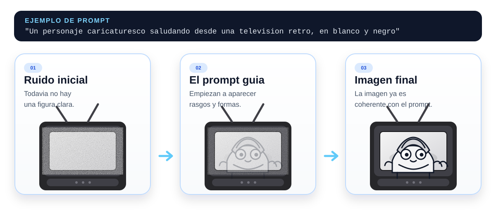

Sesión 4: IA Generativa: ChatGPT, Gemini, Perplexity
Introducción a la IA
Los videos y el texto de esta sesión son complementarios. Los videos amplían el contexto histórico y conceptual; el texto va a los mecanismos y te pone a interactuar con ellos. Encontrarás ideas en los videos que el texto no repite exactamente. ¡Disfruta de esta dinámica!
Introducción
Son las 10 de la noche. Ya estás acostado y piensas en dormir, pero te acuerdas: mañana tienes que explicar la mitosis en clase. Tienes tu celular a la mano, así que buscas “qué es la mitosis” en Google. Aparecen miles de resultados: Wikipedia, videos largos, PDFs antiguos, páginas que se tardan en cargar. Tocas varios enlaces, lees, eliges lo útil y tratas de armar algo coherente.
Ahora imagina hacer la misma pregunta, pero en ChatGPT: “Explícame qué es la mitosis como si tuviera que presentarla en clase”. En segundos recibes una explicación clara, con las fases en orden y ejemplos fáciles de entender. Si fueran las 10 pm y tuvieras sueño… ¿cuál preferirías? Probablemente el segundo 😴. Pero antes de confiarle tu tarea a una app, vale la pena saber cómo piensa realmente una inteligencia artificial de ese tipo.
Un buscador clásico te muestra documentos que ya existen. En cambio, un modelo de IA generativa crea una respuesta nueva, palabra por palabra (y token por token), basándose en patrones que aprendió durante su entrenamiento.
En 2026, muchas herramientas combinan ambas cosas, pero la diferencia sigue siendo importante: una se enfoca en recuperar contenido; la otra en generar texto. Y ambas estrategias pueden fallar, solo que de maneras distintas. Google podría darte información vieja o una fuente poco confiable. ChatGPT podría inventarse datos y decirlos de manera muy convincente. Ese tipo de error tiene nombre propio: alucinación.
¿Qué es un modelo de lenguaje grande (LLM)?
Un LLM (Large Language Model, o modelo de lenguaje grande) es un tipo de inteligencia artificial diseñada para entender y generar texto. Se entrena con cantidades masivas de información escrita — artículos, libros, páginas web, código, mensajes, entre muchos otros — para aprender cómo se relacionan las palabras entre sí en distintos contextos.
Durante ese entrenamiento, el modelo no memoriza hechos como si fuera una enciclopedia. En realidad, aprende patrones estadísticos del lenguaje: observa millones de ejemplos y calcula qué palabra o frase es más probable que aparezca después de otra. Por ejemplo, si encuentra millones de veces la frase “el agua hierve a”, aprenderá que la continuación más probable es “100 grados Celsius”. Pero si el modelo se topa con ejemplos incorrectos o confusos, también puede predecir un dato falso con la misma seguridad que uno cierto.
Un LLM no tiene capacidad de comprensión ni verificación automática. Cuando genera una respuesta, produce la continuación más plausible según los patrones que ha aprendido, no necesariamente la más precisa en términos de conocimiento científico o factual. A veces coincide con la verdad; otras veces, simplemente “suenan” bien.
Por eso los modelos generativos como ChatGPT son tan poderosos: pueden escribir como humanos, resumir textos o crear ideas nuevas. Pero esa misma capacidad implica un riesgo si los usamos sin criterio, porque pueden alucinar, es decir, inventar datos o afirmaciones que parecen reales pero no lo son.
Cómo escribe un LLM: tokens y predicción paso a paso
Para entender cómo un modelo genera texto, primero hay que saber con qué piezas trabaja. Un LLM no opera directamente con palabras completas, sino con tokens: fragmentos de texto que pueden ser una palabra entera, una parte de una palabra, un signo de puntuación o incluso un espacio. Dicho simple: los tokens son las piezas pequeñas con las que el modelo va armando una respuesta.
Una regla práctica:
En inglés, una palabra suele equivaler aproximadamente a 1 token.
En español, como muchas palabras son más largas o tienen más variaciones, una sola palabra puede ocupar entre 1.5 y 3 tokens.
Esto importa porque los modelos no miden el texto en palabras, sino en tokens. Cada token suma al costo y al límite de uso, así que, si quieres ahorrar dinero al trabajar con LLMs, conviene escribir en inglés: con las mismas ideas, suelen hacer falta menos tokens.
Tokens y vocabulario
¿Cómo divide el LLM el texto?
Selecciona un ejemplo para ver cómo el modelo fragmenta el texto en tokens: unidades que pueden ser palabras completas, partes de palabras, signos de puntuación o espacios.
Vista previa del tokenizador
Cada bloque de color es un token. "inteligencia" se divide en dos, "artificial" también.
Nota: esta es una tokenización ilustrativa, no exactamente igual a ningún modelo específico.
Qué estás viendo
Qué significa
Una vez que el texto está dividido en tokens, el mecanismo base es este:
- El modelo lee tu prompt y el texto que ya lleva escrito.
- Calcula qué tokens podrían venir después.
- Les asigna una probabilidad según el contexto.
- Elige uno de los tokens más plausibles.
- Lo agrega al texto y repite el proceso.
Eso pasa una y otra vez, muy rápido. Por eso parece que el modelo “va pensando” mientras escribe, pero en realidad va construyendo la respuesta paso a paso a partir de probabilidades.
Generación autorregresiva
El modelo elige el siguiente token, una y otra vez
Observa cómo se construye una oración paso a paso. Cada barra muestra qué tan probable es cada opción en ese momento dado el contexto previo.
Vista previa del predictor
Cada paso muestra 5 opciones con su probabilidad estimada. La elegida se agrega a la oración y el proceso comienza de nuevo.
Qué estás viendo
Qué significa
¿Por qué la misma pregunta puede producir respuestas distintas?
Si un LLM siempre eligiera la opción más obvia, todas sus respuestas sonarían casi iguales. Pero en muchos casos no existe una sola continuación posible: hay varias que tienen sentido y el modelo puede escoger cualquiera de ellas.
Por ejemplo, al pedirle al modelo: “Explícame qué es la gravedad”, en ese momento puede continuar de varias maneras: con una explicación simple, con un ejemplo, con analogías o con un enfoque científico. El modelo decide entre esas opciones según los patrones que aprendió en su entrenamiento y cuál continuación resulta más plausible en ese contexto. La respuesta que recibes es el resultado de muchas elecciones sucesivas, token por token.
Por eso una IA puede responder distinto aunque la pregunta sea casi la misma. No es que “cambie de opinión”; más bien, está recorriendo uno de varios caminos posibles dentro del lenguaje.
Esto también nos ayuda a entender dos cosas importantes:
Si el sistema está configurado para ser más conservador, tenderá a elegir opciones más comunes y predecibles.
Si está configurado para permitir más variedad, puede producir respuestas más originales, pero también menos precisas o más raras.
En otras palabras: que un modelo sea más creativo no significa que diga la verdad, y una respuesta que suena muy segura tampoco garantiza que sea correcta.
Las tres limitaciones cruciales de un LLM
Entender cómo funciona un LLM hace que sus limitaciones dejen de ser sorprendentes y se vuelvan casi inevitables: el modelo no tiene memoria de eventos posteriores a su entrenamiento, no distingue confiablemente entre verdad y ficción, y percibe el mundo solo a través del sesgo estadístico de los textos que vio. Su poder está en la fluidez, no en la verdad; y su mayor riesgo no es equivocarse, sino hacerlo con la misma seguridad con la que un humano escribiría algo correcto.
Alucinaciones
El modelo no distingue entre un dato verdadero y uno falso, solo entre un token probable y uno improbable. Si el contexto hace que una afirmación falsa parezca plausible, la generará con la misma confianza que si fuera cierta.
Ejemplo clásico: pedirle a un LLM que cite fuentes académicas. Puede inventar títulos, autores y DOIs perfectamente plausibles que simplemente no existen.
Solución: verifica siempre los datos que el modelo presente como hechos, especialmente números, fechas, citas y afirmaciones específicas.
Casos verídicosCuando la IA alucina: tres ejemplos verídicos
El abogado y las citas inventadas
Un abogado de Nueva York usó ChatGPT para buscar precedentes legales. El modelo inventó 6 casos judiciales con nombres de jueces, fechas y citas que sonaban completamente reales. Los presentó ante un juez federal sin verificar ninguno.
Google Bard y los $100,000 millones perdidos
En febrero de 2023, Google presentó Bard con un video donde el chatbot afirmaba que el Telescopio James Webb había tomado las primeras fotografías de un exoplaneta — dato incorrecto. Astrónomos y periodistas detectaron el error de inmediato.
Las citas académicas fantasma
Un estudio en Scientific Reports (Nature, 2023) analizó 636 citas generadas por ChatGPT. Con GPT-3.5, el 55% eran completamente inventadas; con GPT-4 bajó al 18%, pero incluso las citas reales contenían errores frecuentes.
Límite de conocimiento (knowledge cutoff)
El modelo fue entrenado con textos disponibles hasta cierta fecha. Todo lo que ocurrió después simplemente no existe para él, a menos que tú se lo des en el prompt o el modelo tenga acceso a una búsqueda en tiempo real.
Implicación: para preguntas sobre eventos recientes, usa herramientas con búsqueda activa (como Perplexity) o verifica la información con fuentes actualizadas.
Sesgos del entrenamiento
Los LLMs aprenden a partir de textos escritos por humanos, y el texto humano está lleno de sesgos: de género, raza, origen geográfico y clase social. Además, un modelo entrenado sobre todo con texto en inglés va a reflejar visiones del mundo distintas a las de una comunidad mexicana.
Implicación: el modelo no es neutral. Sus respuestas reflejan los sesgos de los datos con los que fue entrenado.
Generación de imágenes
Hasta aquí hemos hablado de texto. En un LLM, la respuesta se construye token por token. En cambio, las IAs que generan imágenes parten de ruido visual y lo van transformando poco a poco, guiadas por el prompt. Ese proceso se llama difusión (diffusion).

Esto ayuda a entender dos cosas importantes:
El prompt no contiene la imagen exacta, pero sí orienta el proceso: le dice al modelo qué rasgos debería ir haciendo visibles.
El mismo prompt puede producir imágenes distintas, porque si el ruido inicial cambia, el resultado final también puede cambiar.
Igual que con la generación de texto, aquí tampoco hay una “respuesta única”. Hay un proceso probabilístico que avanza por etapas, solo que ahora trabaja sobre pixeles en lugar de tokens.
Actividad: la calidad del prompt importa
ChatGPT, Gemini y Perplexity son excelentes herramientas. Pero, como cualquier herramienta, la calidad de sus resultados depende del uso que le damos. Lo que separa una respuesta genérica e inútil de una que resuelve exactamente tu problema suele ser la precisión del prompt.
Ingeniería de prompts
Prompt ambiguo vs. prompt específico: misma herramienta, resultado distinto
Elige un escenario y compara qué pasa cuando la instrucción es ambigua (izquierda) versus cuando es específica y contextualizada (derecha).
Tres escenarios: receta, correo y resumen. En cada uno verás cómo cambia la respuesta según la precisión del prompt.
Prompt enviado
Respuesta recibida
Prompt enviado
Respuesta recibida
Qué estás viendo
Qué significa
Tres variables que mejoran un prompt:
- Contexto: quién eres, para qué lo necesitas, a qué audiencia va dirigido.
- Restricciones: límite de palabras, tono, idioma, formato de la respuesta.
- Ejemplo de lo que quieres: si tienes uno, inclúyelo, el modelo lo usa como referencia.
ChatGPT, Gemini y Perplexity: ¿cuándo usar cada uno?
Las tres herramientas utilizan modelos generativos, pero no están diseñadas para el mismo tipo de tarea. Más que preguntarse cuál es mejor, conviene reflexionar sobre cuál se adapta mejor a lo que necesitas resolver en ese momento.
ChatGPT
OpenAI
Gemini
Perplexity
Perplexity AI
Criterios para usar IA generativa con juicio crítico
Antes de usar o compartir información generada con IA, intenta preguntarte lo siguiente:
¿Importa mucho que esté correcta? No es lo mismo pedir ideas para un proyecto que usar la respuesta para una tarea, una decisión de salud o una información que vas a compartir con otras personas.
¿La información puede haber cambiado recientemente? Si preguntas por noticias, fechas, convocatorias, precios o eventos actuales, no confíes solo en el modelo: verifica con fuentes actualizadas.
¿Puedo comprobar lo que afirma? Si aparecen datos concretos como números, citas, nombres o fechas, revísalos en una fuente confiable antes de usarlos.
¿Mi prompt fue claro? Una respuesta que deja mucho que desear no es el resultado de un “mal modelo”, sino de una instrucción ambigua o demasiado general.
¿Qué perspectiva podría faltar aquí? Recuerda que los modelos aprenden de textos humanos, y esos textos también tienen sesgos y puntos ciegos.
Reflexión · 5 min
Actividad de reflexión
-
Piensa en la última vez que usaste un buscador para algo importante. ¿Habrías obtenido el mismo resultado con un LLM? ¿Cuáles serían las ventajas y los riesgos de usar uno en ese caso?
-
¿En qué situaciones preferirías usar un buscador en lugar de un modelo generativo? ¿Por qué?
-
Si el modelo predice token por token sin "entender", ¿qué implica eso para tareas como diagnósticos médicos, asesoría legal o información de emergencias?
-
¿Usaste alguna IA generativa esta semana? Ahora que entiendes cómo funciona, ¿cambiarías algo de cómo la usaste?
No hay respuestas únicas. Lo importante es que empieces a hacerte estas preguntas antes de confiar ciegamente en una herramienta generativa.
La idea central de esta sesión
Los modelos generativos no buscan información: la generan. No saben si lo que producen es verdad; solo saben si es probable. Para beneficiarnos de ellos, tenemos que tener clara esa diferencia, ser críticos al usarlos y no dejar que la IA piense por nosotros.
Recursos para explorar más sobre el tema
-
Tiktokenizer
Pega cualquier texto y ve cómo lo divide GPT-4 en tokens; puedes comparar el conteo entre español e inglés en tiempo real.
-
Transformer Explainer — Georgia Tech
Visualización interactiva de cómo funciona GPT-2 en tu navegador, sin instalación; ideal para ver la atención y la predicción de tokens en tiempo real.
-
LLM Visualization — Brendan Bycroft
Navega por un transformer en 3D: cada capa, cada operación, la inferencia completa.
-
The Illustrated Stable Diffusion — Jay Alammar
Explicación visual paso a paso de cómo funciona la difusión: desde el ruido hasta la imagen final. Muy bien ilustrado. En inglés; ideal si ya entendiste la idea general y quieres adentrarte en las partes técnicas del proceso.